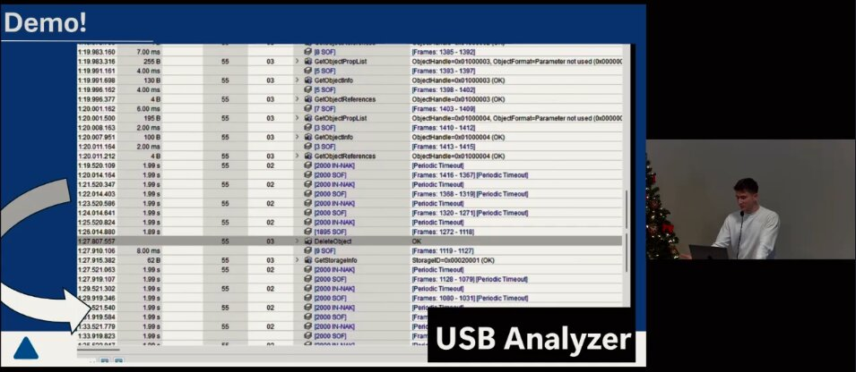
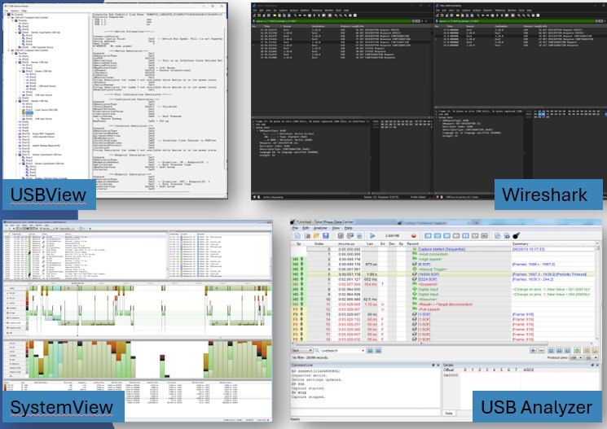

Bringing up a USB MTP driver on GarminOS
Garmin wanted products on the Sensor Core Platform to move from UMS (USB Mass Storage) to MTP (Media Transfer Protocol), so a computer can browse a device's files without mounting its whole file system. I wrote the MTP driver in C, sitting between the existing USB stack and the file system on an nRF52 running GarminOS.
Most of the time went into the parts that didn't work the first time. The worst one was a watchdog reset partway through large transfers. I lined up the USB analyzer capture against what the driver expected and found that a file handle in the first data block was being parsed wrong, so the host kept sending data the MTP state machine wasn't ready for. Fixing the parse fixed the resets.
Also on this team
- Fixed a BLE notification bug.
- Built a per-thread CPU, stack and memory profiler so we could see which threads were close to their limits.
- Spent a lot of time in the low-level USB code: the device state machine and DMA.

